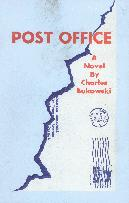

Post Office
Post Office is one of Bukowski's best selling works. In it we follow Henry Chinaski through his years as a letter carrier and as a postal clerk. Bukowski worked for the US Post Office for over a decade, quite a change from the drifter depicted in Factotum.
Literary Kicks
Charles Bukowski Pages by
michael mccullough = michael@magick.net